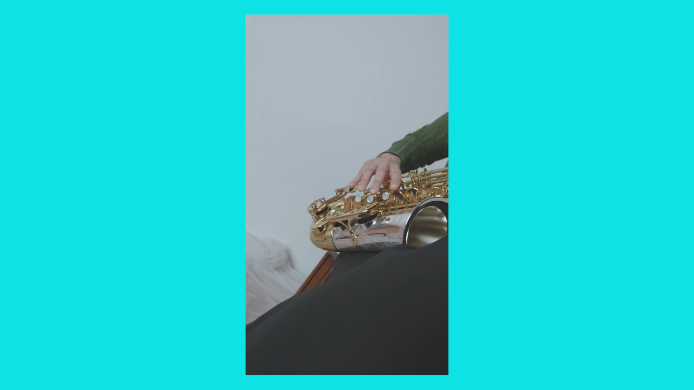
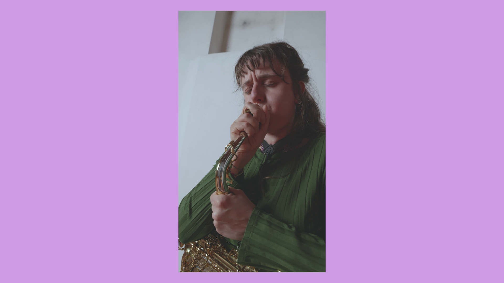
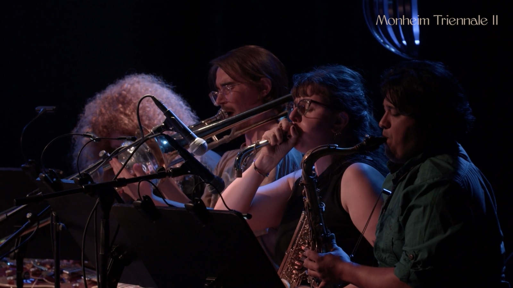
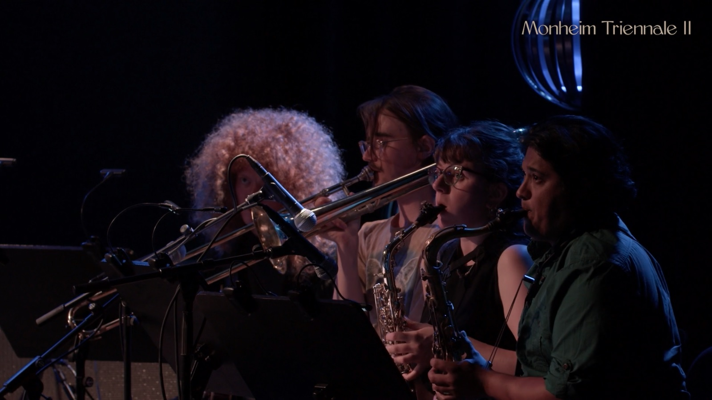
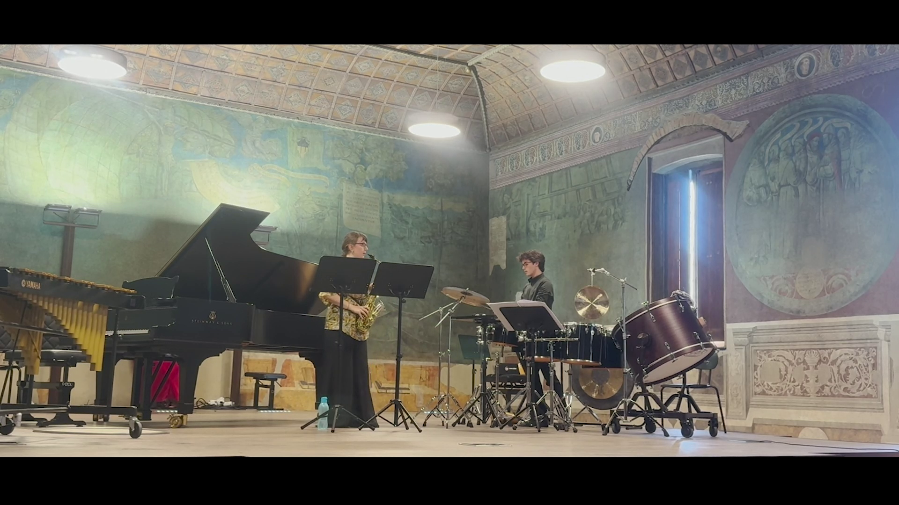

Media
when glass breaks

Video credits: Rosamaria Montalbano
it reflects

This suite explores the body’s resilience: fragile and subjected to recurring pain, yet persistent and alive. Free improvisation and concept by Francesca Fantini.
in fragments

Audio recording, mix and master by Margo Sanda.
Monheim Triennale II with Selendis S.A. Johnson: Reflections on the German Revolution (1918–1919, and more)




Study for Alto Saxophone and Percussion

Study by Simon Steen-Andersen. Alto Saxophone: Francesca Fantini, Percussions: Francesco Paladini.
Rhythmes Lyriques

Rhythmes Lyriques by Lucie Robert. Martina Madini (soprano sax), Francesca Fantini (tenor sax).